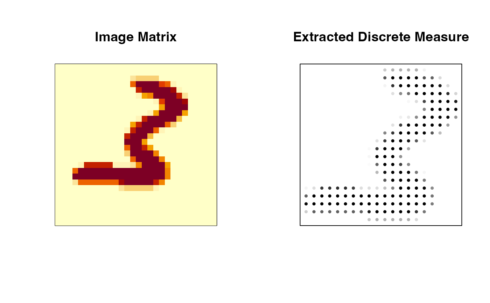

Extract a discrete measure from a gray-scale image matrix
img2measure.RdThis function takes a gray-scale image represented as a matrix \(X\) and converts it into a discrete measure suitable for optimal transport computations in a Lagrangian framework. Pixel intensities are normalized to sum to one, and the nonzero pixels are represented as weighted points (support and weights).
Value
A named list containing
- support
an \((M\times 2)\) matrix of coordinates for the nonzero pixels, where each row is a point \((x,y)\).
- weight
a length-\(M\) vector of weights corresponding to the nonzero pixels, summing to \(1\).
Examples
# \donttest{
#-------------------------------------------------------------------
# Description
#
# Take a digit image and compare visualization.
#-------------------------------------------------------------------
# load the data and select the first image
data(digit3)
img_matrix = digit3[[1]]
# extract a discrete measure
img_measure = img2measure(img_matrix, threshold=TRUE)
w <- img_measure$weight
w_norm <- w / max(w) # now runs from 0 to 1
col_scale <- gray(1 - w_norm) # 1 = white, 0 = black
# visualize
opar <- par(no.readonly=TRUE)
par(mfrow=c(1,2), pty="s")
image(img_matrix, xaxt="n", yaxt="n", main="Image Matrix")
plot(img_measure$support,
col = col_scale, xlab="", ylab="",
pch = 19, cex = 0.5, xaxt = "n", yaxt = "n",
main = "Extracted Discrete Measure")

par(opar)
# }